T here’s a lot to be said for lovability on TV. Whether it’s charming presenters or experts who entertain as they educate, we decided it was high time to salute the people who make our every day viewing a pleasure. Consider it a “soft power list” of TV’s most affable talents.
The likes of Mel and Sue, Chris Packham, Clare Balding, Guy Martin, Kaleb Cooper, Roman Kemp, David Olusoga, Joe Lycett, AJ Odudu, Tom Allen and Stephen Mangan narrowly missed the cut. But they’re all just an adorable viral moment away from breaking into the agreeable elite.
Here’s our selection of the people who cheer us up whenever they come on-screen. We’d love to hear yours, too.
Claudia Winkleman
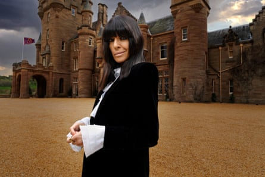‘Effortlessly witty’ … Claudia Winkleman.Photograph: Cody Burridge/PA
The fringe. The teak tan. The penchant for goth garb and daft gags. You know you’re in safe hands when La Winkle is fronting something. Engaging, welcoming and effortlessly witty, she is the perfect mix of slickness and spontaneity. Happily, Winkleman also has impeccable taste in projects. The Traitors, The Piano, and Strictly Come Dancing are all killer, no filler. Probably the best presenter on primetime TV.
Bob Mortimer
Mirth-maker … Bob Mortimer
The Middlesbrough mirth-maker’s ascent to national treasure status has been joyous to behold. Emerging from the shadow of double act partner Vic Reeves, genial Mortimer’s mischievous energy and funny bones have made him a bona fide hero. His heart condition prompted riverbank larks with Paul Whitehouse on Gone Fishing. His turns on Would I Lie To You? leave viewers breathless. He recently romped to victory on Last One Laughing UK, where even the professionally deadpan Richard Ayoade was powerless to resist. Whatcha gonna do? And away …
Stacey Solomon

Queen of the Jungle … Stacey Solomon.Photograph: Suki Dhanda/The Guardian
Who’d have predicted that The X Factor finalist with Roland Rat’s voice would be an award-winning broadcaster 15 years later? She is routinely underestimated by snobs but our Stace is steely and smart. She charmed the nation on I’m A Celebrity and was crowned Queen of the Jungle. Like a relatable Marie Kondo, Solomon is full of can-do compassion on decluttering series Sort Your Life Out. Even professionally hapless husband Joe Swash is made bearable by her winning presence on the couple’s chaotic reality show.
Monty Don
‘The don of gardens’ … Monty Don
There’s nobody you’d rather tend your herbaceous borders. “Donty Mon”, as Alan Partridge drunkenly called him, is the undisputed, well, don of TV horticulturalists. All muddy fingernails and crinkly smile, he eloquently conveys his wholesome passion for all things earthy. Don’t even get me started on his loving relationships with dogs. I’ll start over-watering from my eyes.
Dermot O’Leary
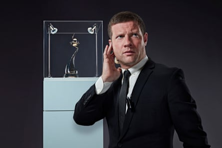‘Infectious enthusiasm’ … Dermot O’Leary.Photograph: ITV/REX/Shutterstock
A firm favourite since he eased our hangovers on cult teen strand T4 and managed to make Big Brother’s Little Brother a must-see. O’Leary’s biggest primetime gig was hosting The X Factor in its imperial phase. He now helms weekly editions of This Morning alongside La Hammond, plus Reel Stories, Soccer Aid, and Silence is Golden . Nimble-witted with infectious enthusiasm, he always radiates good vibes. Deserves a bigger gig if you ask us.
Rylan Clark
‘I’m a celebrity’ … Rylan Clark
Another X Factor alumnus with a surprise second chapter. After going viral for his tear-sodden meltdown when put through to the live shows (“I can’t breathe! Promise this ain’t a wind-up?”), the resilient Rylan bounced back by winning Celebrity Big Brother. He has since become an in-demand host on Eurovision and This Morning. Far cleverer than he is given credit for, he’s a Celebrity Gogglebox scene-stealer alongside Mummy Linda, while last year’s BBC travelogue with Rob “Judge” Rinder was an unexpected treat. As a superfan steeped in TV lore – see his unalloyed glee at his recent Doctor Who cameo – Rylan hits all the right beats with warmth and subversive wit.
Alison Hammond
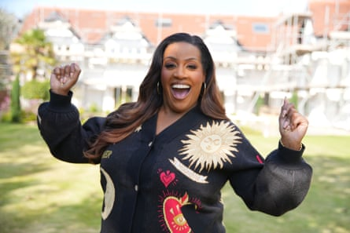‘Fresh energy’ … Alison Hammond.Photograph: BBC Studios
Proud owner of the most infectious laugh on TV, Hammond is always a sheer delight to watch, bab. She has brought a fresh energy to The Great British Bake Off, while her playful Friday stints co-hosting This Morning with Dermot O’Leary have become the flagging daytime fixture’s weekly highlight. Hammond is one of the few people who could have conceivably taken over For the Love of Dogs from the much-missed Paul O’Grady. Last month, she finally got her own interview series, Alison Hammond’s Big Weekend. Writer Jack Rooke even named the protagonist’s goldfish after her in Big Boys.
Danny Dyer
‘The land lord’ … Danny Dyer
Can you pinpoint the moment when Sir Danforth of Dyer went from laddish joke to national gem? Calling David Cameron a “twat” on live TV? Discovering his royal ancestry on Who Do You Think You Are? Providing the heart, soul and moustache of Jilly Cooper’s Rivals? Turning the airwaves blue during his grilling by a neurodivergent panel on The Assembly? Either way, from Queen Vic landlord to masculinity guru, Dyer is a total ledge.
Martin Lewis
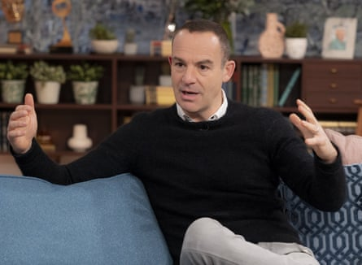‘People’s champion’ … Martin Lewis.Photograph: Ken McKay/ITV/REX/Shutterstock
It takes a lot for a financial journalist to win the public’s affections but the money-saving expert has managed it. After well-received slots on Good Morning Britain and This Morning, the tireless campaigner landed his own primetime series, The Martin Lewis Money Show. The people’s champion when it comes to banking, energy bills and other everyday rip-offs, Lewis is precise, practical and increasingly influential over government economic policy. An all-round good egg.
Davina McCall
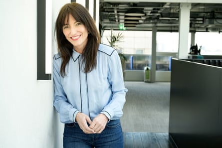‘Canny big sister’ … Davina McCall.Photograph: ITV/Harry Page/Shutterstock
Among the most universally adored faces on our screens, Davina is like the viewing nation’s cool, canny big sister. She became synonymous with Big Brother during its Noughties pomp. McCall now plies her trade mainly on ITV as an empathetic presenter of Long Lost Family, a midlife matchmaker on My Dad, Your Mum and an excitable judge on The Masked Singer. Her menopause documentaries and heath battles have only made her more beloved.
Ian Wright
‘Passionate pundit’ … Ian Wright
Ian Wright-Wright-Wright was a Marmite figure on the pitch but since swapping playing for punditry, he’s become universally adored. This process accelerated when he was tearfully reunited on-screen with Mr Pigden, the teacher Wright called “the first positive male figure in my life”. Wrighty brings a fan’s passion and a frisson of spontaneity which livens up the dullest of matches. He gets the nod over fellow sporty types such as Micah Richards, Emma Hayes, Ally McCoist, Kelly Cates, Annabel Croft, Michael Johnson, Steve Cram, Freddie Flintoff and David “Bumble” Lloyd to make our list.
Prof Hannah Fry
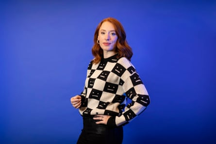Maths isn’t boring … Prof Hannah Fry.Photograph: Alicia Canter/The Guardian
No TV academic wears their knowledge more lightly than the Cambridge mathematician. Determined to explode the stereotype that maths is boring, Fry frames it in populist ways that laypeople can understand – and she does so with an impish grin. Regular appearances on Radio 4, 6 Music and BBC Four led to her own BBC Two series, The Secret Genius of Modern Life. Fry made a moving, maths-heavy documentary about her recovery from cervical cancer and was resident number-cruncher on Channel 4’s election coverage. Carol Vorderman for millennials, anyone?
Ant and Dec
‘Masters at work’ … Ant and Dec
Having won best presenters at the viewer-voted National Television Awards for an astonishing 23 years running, it’s safe to say that Anthony McPartlin and Declan Donnelly are the best at what they do. Standing in patented left-right formation, the cheeky geordie chipmunks steer many of our top-rated terrestrial entertainment franchises – I’m A Celebrity, Britain’s Got Talent, Saturday Night Takeaway – with a glint in their eyes. The duo’s chemistry and comic timing has been honed since their boyhood roles on Byker Grove. Watch the way they link the clips in the Aussie jungle this autumn and appreciate master craftsmen at work. Howay the lads.
Keith Brymer Jones
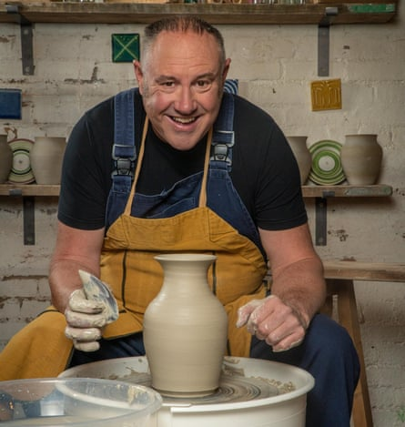‘Hugely heartwarming’ … Keith Brymer Jones.Photograph: Mark Bourdillon/Love Productions
What’s not to love about a great big cuddly bear of a man being moved to happy tears over a nice piece of crockery? The undisputed star of The Great Pottery Throwdown is ceramicist and expert judge Brymer Jones. His punk past can be seen in his sharp dress sense and penchant for anti-establishment designs. Keith’s tendency to become emotional over clay is hugely heartwarming. It has become a badge of honour among the amateur potters to make him blub. Stop it, you’ll set me off too.
Big Zuu
‘Hype man’ … Big Zuu
Last week’s Glastonbury coverage became even more exciting when viewers spotted Zuhair “Big Zuu” Hassan acting as hype man to his cousin, homegrown rapper AJ Tracey, on the Woodsies stage. The TV chef and grime MC from west London via Sierra Leone has won loyal fans for his rambunctious foodie travelogues. Big Zuu’s Big Eats won two Baftas, at which he was endearingly surprised. When he scored the winning goal for the World XI at Soccer Aid last month, his face was a picture.
Richard Osman
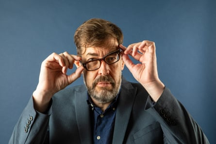‘Cult hero’ … Richard Osman.Photograph: Antonio Olmos/The Guardian
The prolific TV producer didn’t step in front of the camera until 2009 but quickly became a cult hero. An owlishly wise, gently witty presence on quiz shows Pointless and House of Games, he is always excellent value on panel shows. Osman’s mega-selling Thursday Murder Club novels (the starry Netflix adaptation drops next month) and his pleasingly gossipy podcast with our own Marina Hyde, The Rest Is Entertainment , have only made him more admired.
Jane McDonald
‘Your camp auntie’ … Jan McDonald
Nobody can carry a Channel 5 cruising series or lux travelogue like the Wakefield Whitney. All glitter, gags and good time glamour, she’s like your camp auntie. The leather-lunged singer’s appearances on Celebrity Gogglebox, alongside her makeup artist and best pal Sue, have only boosted her appeal. The unpretentious duo guzzle goblets of rosé and cackle away like the ultimate huns. While watching Bridgerton, McDonald cheerfully admitted that she lost her own virginity in the back of a parked Vauxhall van, not noticing that someone was siphoning off its petrol. What’s not to love?
Michael Palin
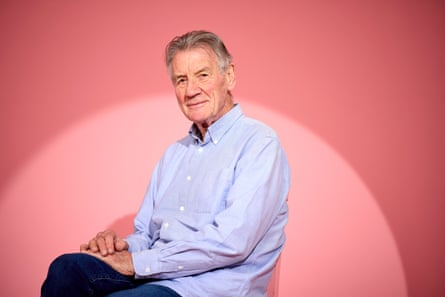‘TV globetrotter’ … Michael Palin.Photograph: David Levene/The Guardian
The wry, twinkly Monty Python veteran has always been jolly nice but it is only in his latter-day career as a TV globetrotter that we witnessed just how all-round lovely he is. In Around the World in 80 Days, Pole to Pole, and Full Circle, he journeyed at ground level, engaging with the culture and winning the hearts of locals, just as he did viewers. The unfailingly polite, eternally apologetic Palin is like the nation’s much-loved uncle. Aged 82, he’s soon packing his bags again, with a Channel 5 trip to Venezuela this autumn.
Louis Theroux
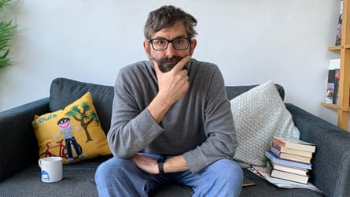‘Elder statesman’ … Louis Theroux.Photograph: BBC
He has been TV’s top documentarian for 30 years, blending award-winning journalism with a humane approach and deadpan humour. His nerdy, naive, bumbling Brit schtick isn’t just adorable, it’s hugely effective at disarming interviewees. Theroux has become an elder statesman, producing series such as Gods of Snooker and Boybands Forever, while mentoring next-gen documentary-makers such as Alice Levine and Jamali Maddix. He’s as amusing as you might expect from a close mate of Adam and Joe – see his viral rap Jiggle Jiggle, as well as his entertaining celebrity interviews – and remains an unlikely sex symbol. Remember, his money don’t jiggle, it folds.
David Attenborough
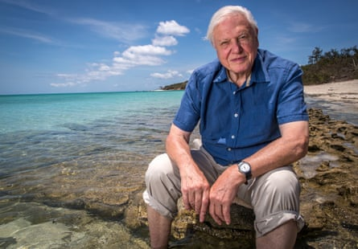‘Reassuringly familiar’ … David Attenborough.Photograph: ABC/PR IMAGE
Who doesn’t feel a warm glow when the legendary biologist appears on-screen? Or his reassuringly familiar whisper narrates some awe-inspiring wildlife footage? Someone without a heart, that’s who. Having spent 70 mighty years as the face and voice of the BBC Natural History Unit, David Frederick Attenborough isn’t just the nation’s grandad. He’s the planet’s grandad. The perennially passionate mensch recently turned 99. Life (or TV) without him doesn’t bear thinking about.